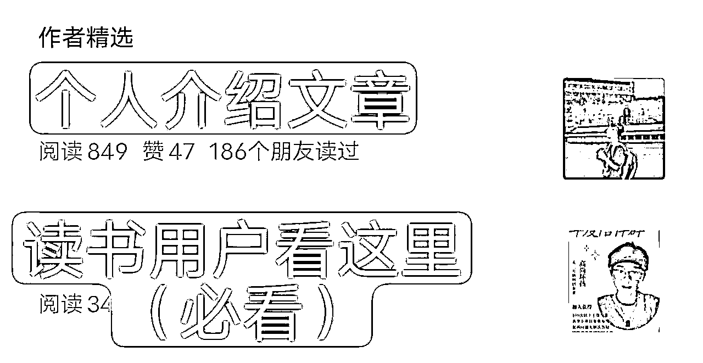

来源：https://zwbfnc29pf1.feishu.cn/docx/VwJndymlMom5moxqveYczHa8ncd
（本文教到10个微信读书引流方法，全文5000多字，预计需要15分钟）
大家好，我是高尚坏孩，马上满20岁了，目前是一名二本在读的大三学生，职高毕业开始创业，大一开始经济独立，今年上半年赚到人生的第一个百万，现在大部分钱都放到了父母手里让他们保管，因为他们平时很节俭，做孩子的还是希望父母不用操心自己，过好自己的生活，以前小时候不懂事让他们操心比较多，现在终于成了别人家的孩子，也算是扬眉吐气一次，嘿嘿。
在大学这三年的时间里，我不断的旅游，看书，会朋友，见世面，当然也谈过恋爱，正当我自认为自己很不错的时候，因为我的理想主义以及不稳重，导致公司前后亏损十余万，最终倒闭。
期间消沉了一段时间，但我一直坚持混圈并且不断付费学习，公司的业务也在稳步的进行，也要感谢知识付费，让我前段时间在一个付费社群里看到有人提起微信读书引流这件事儿，我立刻发现了其中的商机，经过我不断的测试以及学习，总结出了这个适合互联网小白上手的日引100➕，保姆级微信读书引流教程。
希望能够让圈友们可以更快的上手，帮助大家破除爱看书但是不能变现的困扰，让大家真正能做到边读书，边变现，坏孩觉得这样就是这篇文章存在的意义。
本文汇总了微信读书这款软件的所有想得到和想不到的引流方法，5000字长文，细节抠的很死，如果后续还有更新的玩法也会同步，本文讲的很多知识点，哪怕你不想用微信读书引流，坏孩认为你都可以看一下。
好嘞，话不多说，进入正题（如果在看的过程中有任何问题以及疑问，欢迎大家在评论区指出，坏孩一定第一时间修改以及解惑。）
大家用自己最常用的手机去操作哦，微信读书引流是适合你随时随地去做的项目。
它不需要你每天花一整段时间去做，它是一个做一点有一点效果的项目，坏孩希望你可以在通勤路上，睡前，课间等时间来操作。
比如：
点我学习副业，坏孩带你副业赚钱，坏孩带你阅读赚钱等等，总之名字就是让大家看到你就知道你干什么的，愿意去点开你。
只有当对方愿意点开你的时候，他才会看到你的个性签名，你想想如果你的名字就是普通的王栋强，李国梁，花好月圆，平安人生，哪怕你曝光的再好，不被点开就没有用！！！
比如：
免费带副业，微信xxxxxx
关注公众号xxxx，回复666拉读书打卡群
免费领取互联网450个赚钱项目，vx：xxxxxx
零投入，月赚五千到十万不等，➕xxxxxx
我建了个读书打卡群，群里气氛超级好，想进的话我拉您➕xxxxxx
你还可以多留几个钩子吸引不同的人群，（比如下图）
⚠️注意：
1.如果在做这一步的时候出现了审核不通过的情况，那你就改一改，比如微信改成vx，v或者直接就是➕这个符号。赚钱这个词不行的话就改搞💰，搞米等等，随机应变，学会灵活一点。
2.自己把控是否要说免费，坏孩图中个性签名说了免费是因为坏孩要推的项目，都是适合小白的项目，并且利润绑定抽成，所以只会收押金，等于免费，我需要更多的人和我一起跑，你赚钱我才能赚钱。
如果你手头的项目也是吃管道收益的项目的话这样没关系，否则就要思考人群质量可能会降低，你是否有时间精力去承接流量，如果你不想被白嫖的话，建议不要说免费。
一个项目如果想要完整的闭环，那么就一定要提前设计好整个环节。并预想有可能会出现哪些特殊情况。
你应该准备好一套话术，去引导客户加你。比如你好，如果你想要xxx的话，麻烦联系下v：xxxx这里我不常看消息哦。
①留微信号：是最直接的，但是如果流量爆了的话可能会出现加微信频繁的情况，这个时候流量就被浪费了。
②留公众号：最终的目的还是让人加上微信，那么留公众号的话虽然使劲造不限制，但是对用户的触达路径就变长了。你要思考下自己的引流路径一共有多少步，一步是最理想的，也就是点击自动跳转微信，或者扫二维码跳转微信。搜索微信号是两步，公众号的话就至少三步。
引流这件事儿一定要把自己的引流路径缩到最短，每多一步都意味着至少10%的客户流失。
1）（留公号的才看）设置好关注后的自动回复内容
切记一定要在用户关注后的自动回复里留下自己的微信，无论你是直接发文字告诉大家，还是微信二维码上面写上加我领资料还是上面那个老道理，一定要把加微路径设置到最短。（搜索公众号一步，关注公众号一步，然后第三步就一定要让对方看到你的微信）
（关键词自动回复功能：适合你引流的时候说的是回复666领取xxx这类的话的时候就需要）
2）写公众号置顶文章
个人介绍文是必须写的，哪怕你不做微信读书引流项目，你都值得写一篇，它是一个边际成本无限高的事儿。
里面要写清楚你有哪些产品，有哪些服务，个人经历路程，而且你还要学会不断随着自己的升级，迭代自己的自我介绍文。
你把人家从微信读书大老远搞过来，你肯定要有个交代，要么在上面的自动回复页面就告诉大家，要么就在公众号置顶里让大家看到。不要指望你不说清楚大家就会加你的微信。

③微信设置（如果你留的微信，直接看这里）
可以是公众号文章也可以是图文版本的，总之让大家一进来就知道你干嘛的，有什么？
放到收藏夹里，精准触达每一个加上微信的用户。
这里做任何项目的都可以用上，因为这是你唯一一次能让用户100%看到你的机会。
其他时候不管是朋友圈还是标签群发，或者发公众号都会有看不到的时候，所以一定一定一定要珍惜不能浪费。
你有哪些产品，就去引这个产品适合的人群，这里举个反面例子，如果你是有一个年度陪伴群产品，那么我们思考一下，年度陪伴群这个产品，他适不适合在微信读书上引流呢？
答案是不适合，因为什么，因为不够直接，年度陪伴群吸引的人是什么人，是信任你的人，他是需要一定时间，或者说至少要对你足够了解才会让人愿意加入的。所以类似于年度陪伴群这样的需要人群粘性的产品，一定不是我们做微信读书一开始就需要的流量。
比如你的产品是一个小红书电商的陪跑项目，那么你吸引的人群就应该是创业粉，越小白越好，你不能说你需要的人群是小红书大佬，那方向肯定错了。
这个时候很多小白就会说了，但是我就是没有产品啊，坏孩告诉你三个方向。
第一：分销别人的产品：你不一定非得做自己的产品，分销别人的产品是很多人刚开始做互联网的时候为数不多的变现途径，买东西一定是要有信任背书，要么你有，要么你卖的东西自带。
第二：卖自己：简单来说就是实在不知道卖什么，也没东西分销，那就卖自己吧。你可以用加你微信送xx资料这种模式引流，让别人成为自己的微信好友，先丰富下自己的用户基数，不然上战场没有子弹，那还打屁。
第三：建付费读书群：这一点可以和第二点做一个结合，不然单做第二点的话有点浪费流量，虽说是丰富用户基数，但是刚加上微信这一会儿是你和用户之间唯一一次100%触达的机会，如果浪费了太可可惜。
玩法也很简单，你建一个读书群，然后多拉点好友进群，先丰富下群内人数，然后制定好群公告（不会写去抄别人的群，同行是最好的老师），然后告诉加上来的人，为了筛选真正喜欢读书的人，而不是打广告的，营造一个良好向上的读书群质量，需要5块钱的门槛，之类之类的。
误区:
很多人（多指小白）是打算先引流然后再思考自己的产品，其实不对，应该是先思考自己有哪些产品，再根据自己的产品去定制适合的引流方案。
因为就像坏孩前面劝退说到的，这个玩法适合你真正每日有读书需求，然后结合着顺便引流，可想而知引流速度不会那么的暴力（帖子爆了除外）但是总之如果你的产品围绕着这个入口的话效率会比较低。
所以话说回来如何知道自己需要的人群爱看什么书呢？
互联网时代，人手一部手机，你会搜别人也会搜，你直接以客户视角去搜，比如：“适合创业小白看的书有哪些？（创业粉）”“刚生完小孩适合看什么书”（宝妈粉）
不是想当然的认为我需要的人群就一定会看这样的书，我以引流创业粉来给大家举个例子。
例如：
大学毕业的我想要求职，那么是不是《和面试官交流技巧》这本书更吸引我，我不会去看《企业管理方针》《如何管理创业型公司》这样的书。很多人就会想当然的觉得创业粉，那肯定是看创业的书，开公司的书，不对。
所以定引流人群就像做短视频一样，不是先定赛道，而是思考你的人群会看什么样的视频。

有点啰嗦，但是还想想讲一下，引流的方法很多，但是还是要强调，微信读书引流适合你真的是用微信读书在看书，那么这个方法适合你，如果你不看书，就为了用它引流的话，我个人觉得它的引流效果不会有你预期的那么好。比起外面小红书抖音等暴力引流方法，微信读书的引流一定是细水长流的。
每一章最后都会有评论区，你就在评论区里面发布对这章的章评就好，可以简单一点，但是要注意迎合别人点赞，点赞越高，在评论区的排名越高。可以多发刷屏，更大概率让别人看到你。
（位置如图）
⚠️注意：
1.不要发广告内容，就正常评论就好，因为你发多了可能会被封号，我们做的是个长期的事儿，如果被封了就得不偿失了。如果实在不知道评论什么，你来一句，“看完了，有一样看完这章的吗？有的点个赞我看看多少人”，也行。
2.越靠前的章节越值得用心去评论，因为任何书都是越看到后面人越少，你想想如果你在第一章的评论被顶到了最高，是不是会起到很好的引流效果？换句话说越前面的章节越值得你去评论刷屏。
就是在文中写自己的想法引流，自己选择比较好的文字内容划线然后引流。
可以在别人没有写过想法的地方去写，人都是有好奇心理的，就像微信的小红点有一个你就想点掉。
顾名思义，整页整页的划线，让别人翻页的时候不小心点开，或者猎奇心理点开。
注意：
（位置如图）

这个很好理解，你一点赞他后台就会收到通知，一般就会点进主页去看你。
适合你评论的时候顺便点赞
（位置如图）
微信读书的评论区排名的逻辑是点赞➕评论的数量。
比如下图点赞➕评论一共是3，这个时候你给自己的评论点个赞，然后评论3句就超过他啦。
.我们只用把自己顶到前四名就行了，因为前四名会在点开的时候就看到，不用下滑。
（位置如图）
适合用零散时间看书的人，看一会不看了的时候，出来点几十个就行，不要想着花一整段时间去点赞，点多了会频繁。
（位置如图）
和上面第3点差不多
直接私信别人打广告，不太建议，因为上文就说过不要在微信读书这款软件为了引流而去引流，我这里只是列举出来。（给大家测试过了，不用关注也能直接发消息，不用对方回消息就可以无限发消息包括图片）
（位置如图）
每看完一本书之后都到书籍的首页书评区坚持写书评，先给书点个评级然后就会跳出书评框让你写，这本身就是个好习惯，哪怕不是为了引流也值得写，但是如果书评写得好写的爆了后会是一个长期的引流入口。值得费心思，费功夫去写一下。
（位置如图）
首页书评区下滑有个热门划线部分，这个部分大家可以点进去然后去点赞评论，按热度排序的，在里面评论更容易被人看到
（位置如图）
1)别人搜索这本书的时候，如果你书单里面包含这本书，也是有机会被别人搜索书籍的时候看到。
2)建议做下面这种合集的书，比如某个作者的书籍大全，又比如某个系列书籍有很多部，你把他整合到一起但是这个流量入口比较内卷，因为除非别人特意点进去不然只能看到排名前几的书单。但是如果爆了，那就享清福了。
（位置如图）
1)日常分发随笔，感想，输出文字（适合长期耕耘）
你在任意地方写的文字都可以同步过来，吃分发流量
（位置如图）
2)打广告（说建读书群）引流
先进入这个话题，然后借鉴这个帖子去发类似的帖子（一比一像素级复制）
（位置如图）
⚠️注意：不只这一个话题下可以，但这个是在微信读书推荐位上的话题，流量最高，大家把帖子做好后，可以在其他话题下再分发，不要浪费流量。
微信读书里面评论的权重是最高的，我们可以多拿几个小号去顶帖，有空就去顶顶，内容可以是，求拉，申请加入等等。然后我们的文案中一定要提到让对方互动发送指定文字，关注后才给他拉群。
如上图同行的文案，这个人的帖子我看见占据这个流量入口很久了，其实说来说去就是一比一像素级模仿。先模仿后超越。
电子版的渠道哪里找？坏孩建议的话可以在拼多多直接找人代找，或者直接百度搜索书名➕百度网盘
（例图）
微信读书里搜索自己的公众号并关注，然后经常在这个公众号里发内容。会被已经关注你微信读书的人看到，这个点适合你微信读书被很多人关注了后去做，反复鞭尸暗示别人要关注你公众号。
（如果你就几十个微信读书好友，那你不如直接一个一个去私信人家，效率比这个暗示高多了）
（位置如图）
关注了公众号后，公众号就会像一本书一样躺到你的书架，你可以对这本“书”进行如上教到的任何操作。如下图所示，写完后就会在关注页面被关注了你的书友看到。
（位置如图）
其实引流方法没有好坏，虽说坏孩觉得微信读书引流不如其他方式引流暴利，适合小白，因为号上手，但胜在它稳定并且你每一条内容都可以吃到长尾流量，它不会像短视频一样你可能越到后面流量越少。微信读书你留下的每一个文字就在这个书里面，除非腾讯数据库出问题，不然就是在这，吃一辈子。
大家也可以把自己的每日读书感想，分发同步到星球，公众号，知乎，豆瓣，即刻，今日头条等等平台，做内容分发，薅尽每一分流量。
最后大家看完后就去动起来，不要下次一定。
最后，感谢生财提供这样一个平台，让坏孩能够认识这么多大佬，坏孩加入大概是半年时间，遇到了挺多贵人的，真的是应了一句话，圈子决定层级，以及认知下限。也希望这样的好运和能量也都能够回流给大家。
（各位看官朋友，如果这篇文章有什么写的不详细的地方，希望您一定指出，坏孩会最快时间来更新，如果期间有任何疑问，欢迎和坏孩交流。最那就话不多说啦，祝大家生财有术，创富未来。）